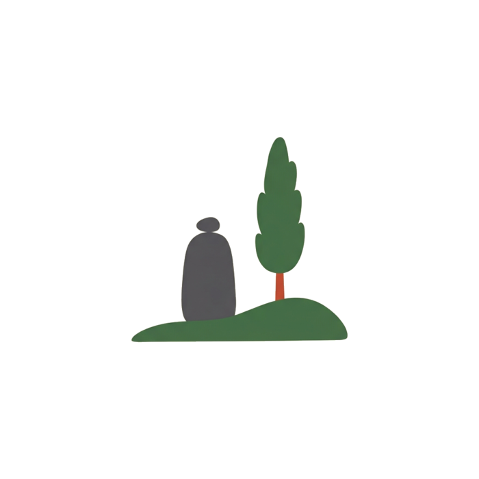

Home / Before you come / The Jewish cemetery of Lyon
The Jewish cemetery of Lyon
La Mouche, in Gerland, since 1795
Lyon's Jewish cemetery is the cimetière israélite de la Mouche, in the Gerland district of the 7th arrondissement. It was founded in 1795 and holds more than 4,900 graves, a monument to the Jewish soldiers of France and a memorial to the deportation. It is managed by the Consistoire, not by the city.
- 11 rue Abraham-Bloch, 69007 Lyon
- Founded 1795
- Managed by the Consistoire

- Address
- 11 rue Abraham-Bloch, 69007 Lyon (Gerland)
- Opening hours
- Sunday to Thursday 8:00 to 18:00
Friday 8:00 to 16:00
Closed on Shabbat and Jewish holidays - Managed by
- Consistoire de Lyon, 13 quai Tilsitt
1 places on the map. Tap a marker for the address and directions.
Finding a grave
- Before you travel. Call the Consistoire with the full name and, if you have it, the year of death. A catalogue of the graves was compiled in 2003.
- On the day. Men cover their head. Bring a small stone to place on the grave. The cemetery is a 10-minute walk from the Debourg metro station (line B).
- With Mishpacha. If a family grave is part of your trip, tell us: we add the visit to your Memory tour and help you prepare the search.
Sources: City of Lyon and Consistoire pages, checked 7 October 2026. There is no Jewish section in the Guillotière cemetery: La Mouche is the Jewish cemetery of Lyon.